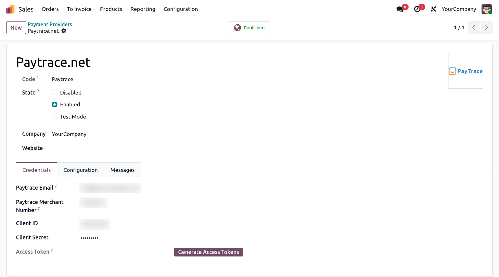
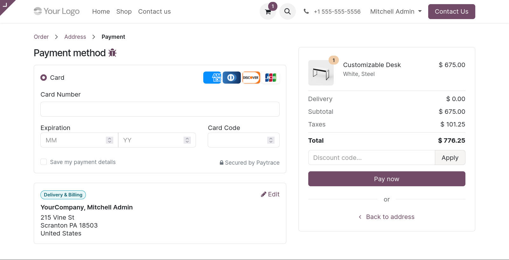
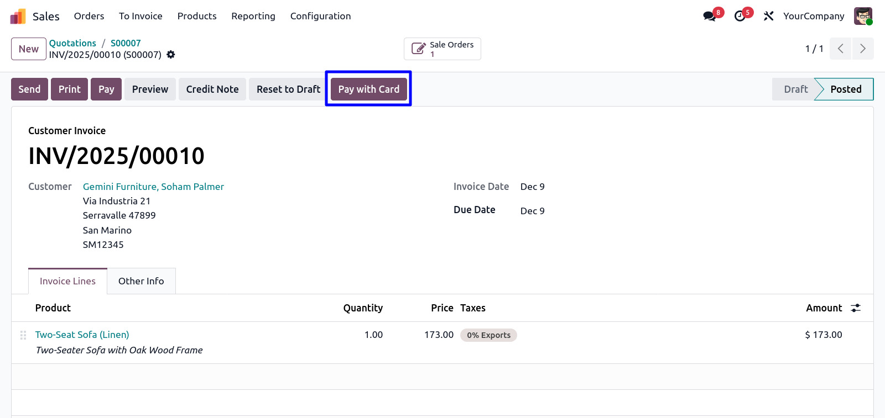
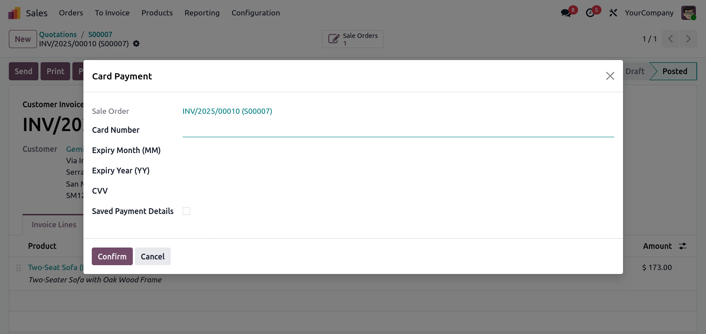
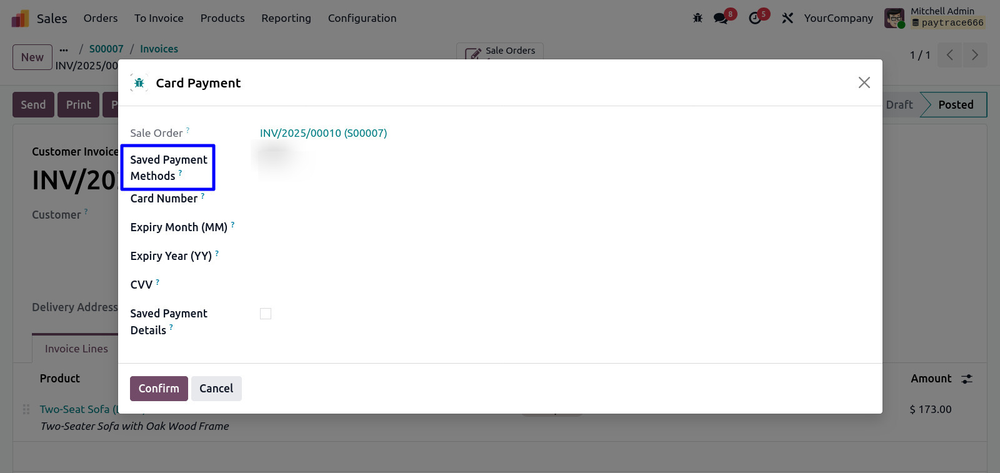

PayTrace – Odoo Payment Gateway Integration
Seamlessly integrate the PayTrace Payment Gateway with Odoo for secure online and backend payments.
- Website Checkout Payments
- Backend Invoice Payments (Phone Orders)
- Secure Card Tokenization using PayTrace Customer Vault
1. Key Features
- Website checkout payments
- Backend invoice payments with manual card entry
- Card tokenization with PayTrace Vault
- Pay using saved card tokens
- Partial and full payments supported
- Multiple cards per customer
- PCI-compliant (Odoo never stores card numbers)
- Supports PayTrace Sandbox (test) & Production environments
2. Installation
- Copy the module into the addons folder
- Update Apps List in Odoo
- Install the module from the Apps menu
3. PayTrace API Credentials
Obtain the following from the PayTrace merchant portal:
- Merchant ID
- API Username (Client ID)
- API Password (Client Secret)
Enter these details in the Odoo Payment Provider settings.
4. Configuration in Odoo
4.1 Payment Provider Setup
- Go to Invoicing → Configuration → Payment Providers.
- Open PayTrace.
- Enable the provider.
- Select Test or Production mode.
- Enter your PayTrace API credentials.
- Save the configuration.

5. Website Payments
Customers can enter card details securely during checkout and complete payments instantly.

6. Backend Invoice Payments
Users can process payments directly from customer invoices, including phone orders.
6.1 “Pay With Card” Button
This button appears on any posted invoice and opens the secure payment wizard.

6.2 Payment Wizard Options
A) Manual Card Entry
- Operator enters card number, expiry, and CVV
- Option to save card details in PayTrace Vault

B) Pay Using Saved Token
- Select previously saved customer cards
- Instant, secure payment

7. Tokenization & Customer Vault
All sensitive card data is securely tokenized by PayTrace.
Odoo only stores the token and masked card number, ensuring full PCI compliance.